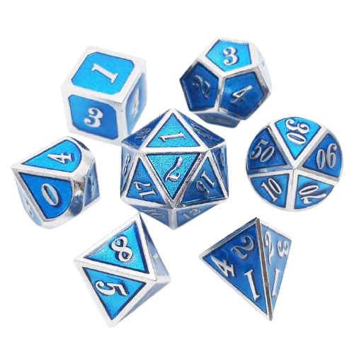

サイコロ・１００個まで振れるアプリ！！
背景色指定
背景変更
６面体サイコロ・２個
（２Ｄ６）
１００面体サイコロ・１個
指定数
以下の出目なら成功
４面体サイコロ・１個
（１Ｄ４）
１０面体サイコロ・１０個
（１０Ｄ１０）
２０面体サイコロ・１個
（１Ｄ２０）
サイコロの
種類(Ｘ面体)
と
個数
を選んで下さい。
種類
４面
６面
８面
１０面
１２面
２０面
１００面
のサイコロを
個数
振ります。
サイコロを振る
メッセージウインドウ

合計は
0
です。
ダイスロール記録